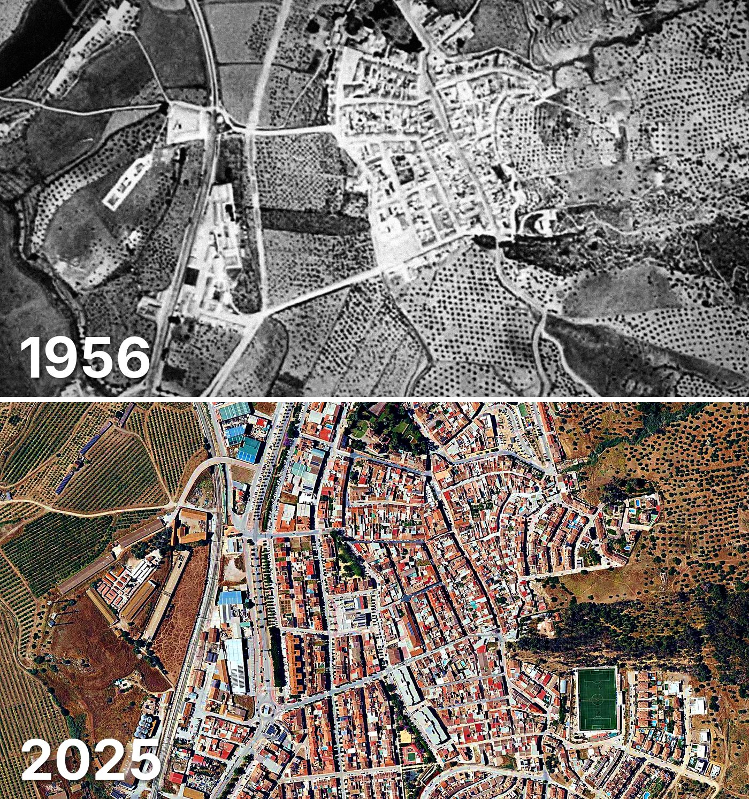

Pizarra
Pizarra tiene 2.847 edificios y 3.801 viviendas, y 10.334 habitantes en 2025. La mitad de sus edificios es de 1988 o posterior.
Cuándo se construyeron sus edificios
Desde 2015 se han terminado 67 edificios.

Las calles de Pizarra con más viviendas
- Calle Camarón de la Isla · 94 viviendas
- Calle Dehesa · 88 viviendas
- Calle Rodríguez de la Fuente · 88 viviendas
- Calle el Limonar · 84 viviendas
- Avenida la Constitución · 81 viviendas
- Calle Málaga · 81 viviendas
- Calle Sin Nombre Uez · 81 viviendas
- Avenida la Fuensanta · 62 viviendas
Toda la información de Pizarra en CASAS.ES →
Fotos de Pizarra para publicar
Estas fotos aéreas de Pizarra, de 1956 y de 2025, se pueden publicar gratis en un periódico, un blog, la web del ayuntamiento o las redes, citando la fuente como se indica debajo.

Descargar: las dos juntas · 1956 · 2025 (JPG, 1.400 px de ancho)


Texto listo para publicar
Pizarra desde el aire: así era en 1956 y así es en 2025
Las dos fotos muestran el mismo encuadre de Pizarra con 69 años de diferencia: arriba, el Vuelo Americano de 1956; abajo, la foto aérea del PNOA de mayo de 2025. Hoy Pizarra tiene 2.847 edificios y 3.801 viviendas, y 10.334 habitantes en 2025. La mitad de sus edificios es de 1988 o posterior. El 34 % de sus edificios se ha levantado desde el año 2000.
Más datos de Pizarra en CASAS.ES: casas.es/malaga/pizarra
Cita para copiar
Fotos: Vuelo Americano Serie B (1956-57) y PNOA 2025, cedidos por © Instituto Geográfico Nacional (CC BY 4.0, scne.es). Datos y composición: <a href="https://casas.es/malaga/pizarra/">los datos de Pizarra en CASAS.ES</a>Descarga: municipios (CSV) · calles (CSV) · Wikidata (Q1657599) · cómo usarlos en Python (dev.to) · también en OSF, Figshare, B2SHARE y Mendeley Data